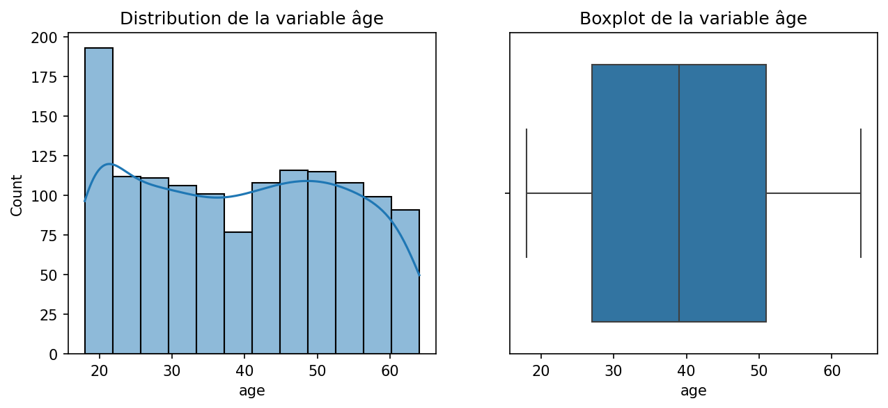
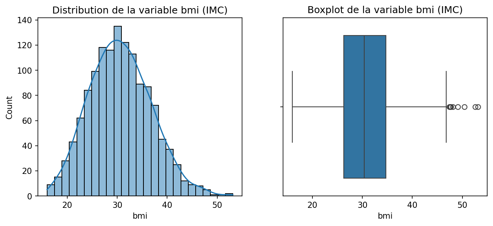
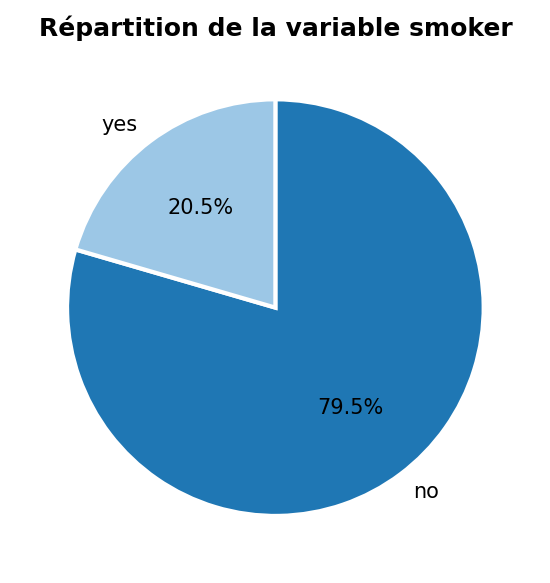
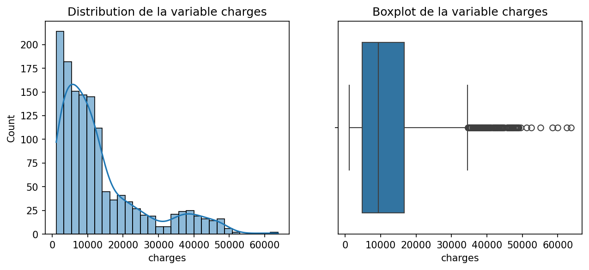
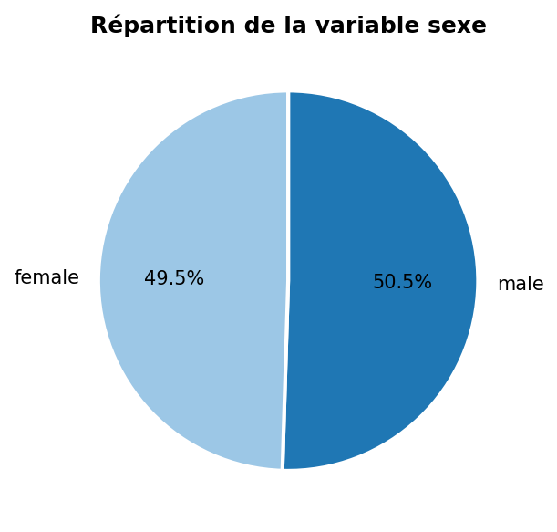
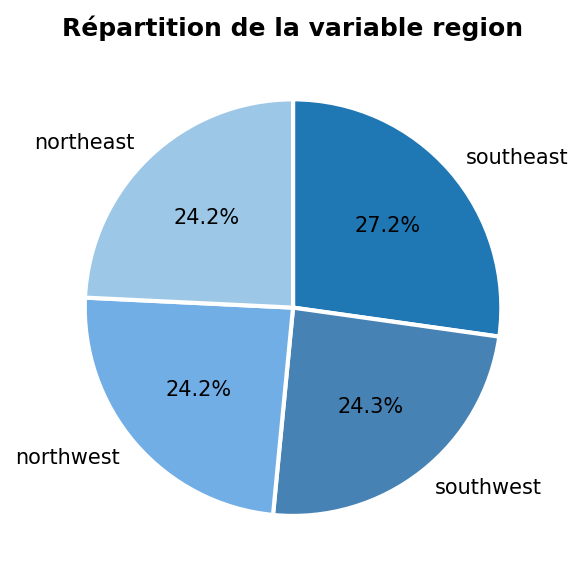
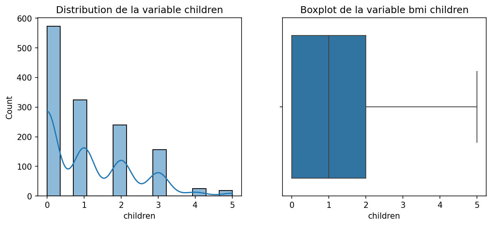

Analyse exploratoire des données
La base de données exploitée provient de Kaggle, une plateforme de référence pour l’accès à des jeux de données publics. Elle concerne le domaine de l’assurance santé et se caractérise par les éléments suivants :
| age | bmi | children | charges | |
|---|---|---|---|---|
| count | 1337.000000 | 1337.000000 | 1337.000000 | 1337.000000 |
| mean | 39.222139 | 30.663452 | 1.095737 | 13279.121487 |
| std | 14.044333 | 6.100468 | 1.205571 | 12110.359656 |
| min | 18.000000 | 15.960000 | 0.000000 | 1121.873900 |
| 25% | 27.000000 | 26.290000 | 0.000000 | 4746.344000 |
| 50% | 39.000000 | 30.400000 | 1.000000 | 9386.161300 |
| 75% | 51.000000 | 34.700000 | 2.000000 | 16657.717450 |
| max | 64.000000 | 53.130000 | 5.000000 | 63770.428010 |
Cette partie permet d'examiner la distribution de chaque variable de manière isolée pour identifier les tendances de l'échantillon :
Distribution de l'Âge
Distribution de l'IMC (BMI)
Distribution de fumeur
Variable cible : charges
Distribution de sexe
Distribution de region
Distribution de children
Cette section explore l'influence des différentes caractéristiques sur variable cible (charges) afin d'identifier les principaux leviers de coût :
La variable charges représente les coûts de santé individuels facturés par l'assurance. Son analyse est cruciale car elle constitue l'objectif de prédiction de nos modèles :
Un rapport de profiling automatique a été généré à l’aide de la librairie ydata_profiling. Ce rapport fournit une analyse détaillée des distributions, des corrélations, des valeurs extrêmes et des interactions potentielles entre variables, en complément de l’analyse exploratoire manuelle réalisée précédemment.